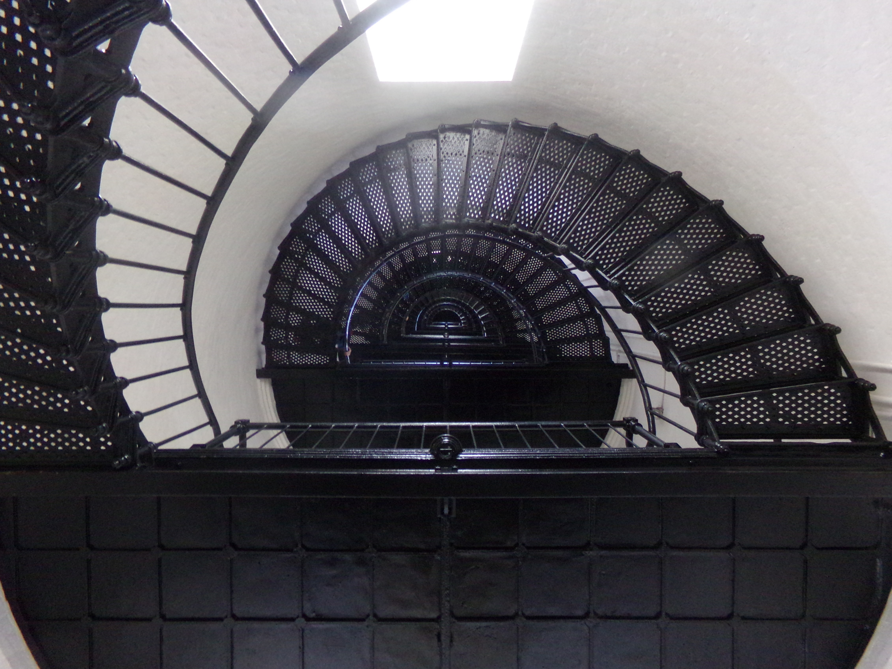
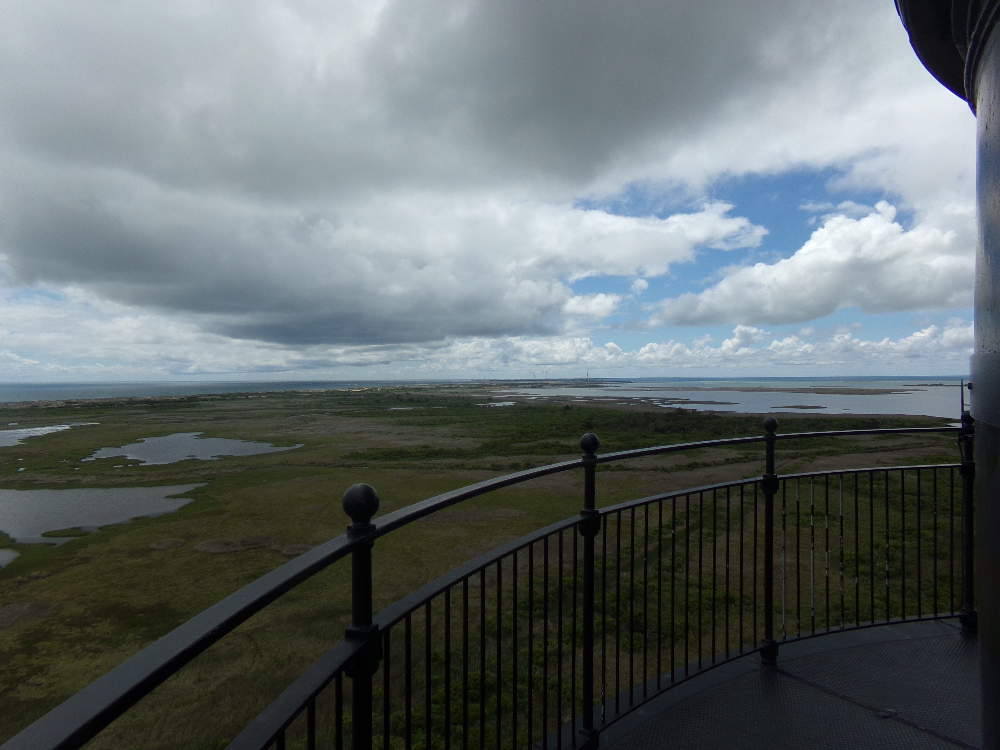
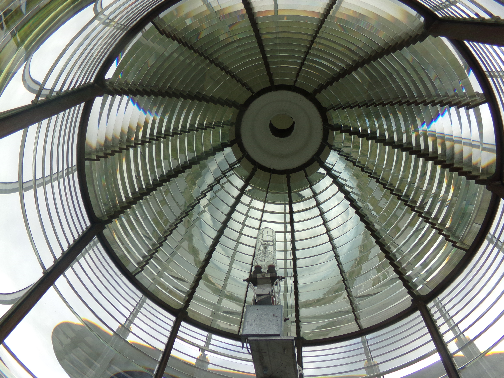
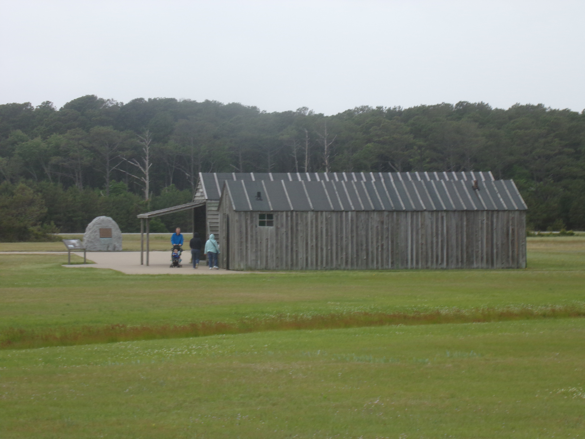
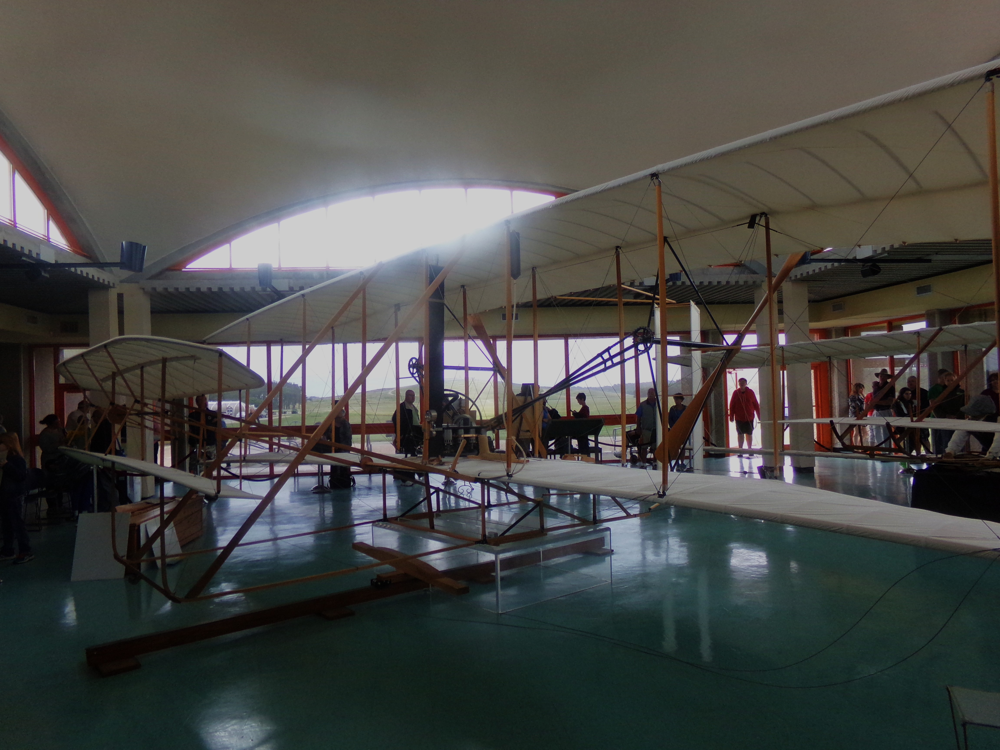
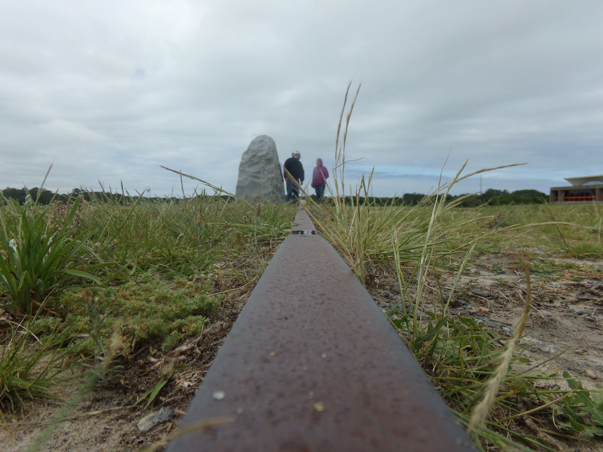

Built in 1872, the Bodie Island Lighthouse is operated by the National Park Service.

Interior view looking upward.

Panoramic view from the top.
This lighthouse was a key aid to navigation for ships entering one of the most dangerous sections of the Outer Banks.

Inside the large 1st order Fresnel Lens. This lens enabled the light to have a range of more than 18 miles out to sea.
×
Kill Devil Hills
The Wright Brothers chose this area to test their aircraft, due to the wind there.

The Hangar, where they stored their aircraft.

In December of 1903, the Wright Brothers completed a flight in their new motorized aircraft.
Because of their dedication and hard work, the age of human flight had launched.

This is a shot of the metal rail that Orville and Wilbur used to take off in their glider over 1,000 times.